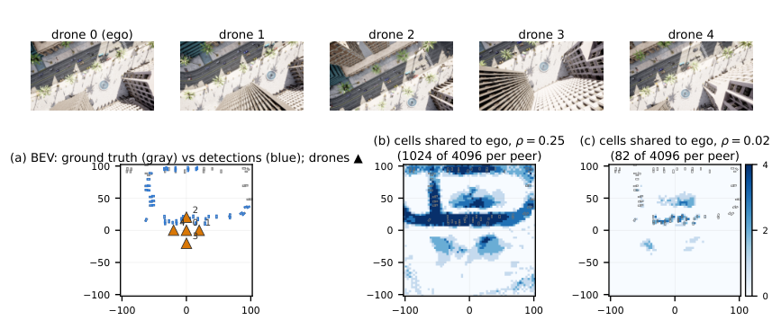

Executive Summary
Five drones that pool what they see detect about twice as well as one drone flying alone. The bill is 13.1 megabytes per fleet-frame. Every time the fleet processes a single scene, that much has to cross the wireless links, and it is far more than the radio on a real drone can carry. A paper two researchers at Texas Tech posted to arXiv on September 1 measured how far that exchange can be cut when the cutting is done to fit the mission.
They left a released DiscoNet checkpoint alone, used it for inference only, and changed the sharing schedule at evaluation time. Inside the mission region of a track-a-target task, 5 to 10 percent of the full-sharing bytes produced no accuracy difference the statistics could detect. The same experiment carries its own warning. Which sharing policy wins flips with the bandwidth budget, so holding one of them fixed costs up to 7.7 AP.
That is what led the authors to propose the context plane. Beside the data plane that hauls the heavy perception payloads, they add a thin second plane that carries nothing but a state summary of at most 1 KB from each drone at 10 Hz. This article follows what the paper measured and what it declined to claim, then adds a reading from the data pipeline side in section 6. Section 6 is this article's, not the paper's.
Key Figures
Source: Liangkai Liu, Xiaoxiao Wu, Fleets Need a Context Plane: Rethinking Cooperative Perception for Autonomous Drones, arXiv:2609.00659 (2026-09-01)
5-10%
Bytes that held mission accuracy
Full sharing spends 13.1 MB per fleet-frame
7.7 AP
Price of fixing the policy
Carrying the large-budget winner into a starved link
5.9 AP
Gap between two policies tied on full-scene accuracy
On the full scene both scored 0.257 AP
0.01%
Bandwidth the context plane took
10.1 KB/s to steer 105 MB/s
Twice the Accuracy, at 13.1 MB per Frame
In cooperative perception, where several machines split the work of looking at one scene, what they exchange falls into three levels. Early fusion ships raw sensor data, which preserves the most information and costs the most bandwidth. Late fusion ships only detection results, which is cheap and throws away usable information. Intermediate fusion sits between them. It exchanges the latent feature maps a neural network produces, and most recent systems stand there.
The trouble is that the middle is still heavy. UAV3D, the benchmark this paper uses as its test bed, is a camera-only collaborative detection setting with five drones, and each peer produces an 80-channel FP16 bird's-eye-view feature map. When all five share, 13.1 megabytes move per fleet-frame. What that buys is not in doubt. A single drone with no fusion reaches 0.185 AP, and full sharing lifts accuracy to 0.371 AP. That is a gain of 18.5 AP, with a confidence interval running from 16.9 to 20.3.
AP here is average precision, and every value written as some number of AP in this article means a difference in percentage points of that metric. Nobody disputes that cooperation pays. The dispute is over the price it is bought at.
Most deployed systems settle what to send, to whom, and at what fidelity and rate before takeoff, then fly the whole mission that way. The habit came from ground vehicle communication, and in the world of vehicle benchmarks the choice is usually reasonable. Routes are fixed, power comes from an engine or the grid, viewpoints are close to planar, and roadside infrastructure and HD maps stand behind the vehicle.
In the air those assumptions fail one by one. Within a single sortie the mission changes phase, batteries drain, formation geometry shifts across six degrees of freedom, and the scene each drone covers overlaps its neighbors and then separates again. Runtime adaptation is not unheard of, but by the authors' accounting the existing methods each respond to a single signal. Where2comm, which sparsifies features by spatial confidence, is one example, and HydraCollab, which swaps fidelity levels at runtime, is another. On a flight where several axes move at once, a policy that reads one axis spends much of the mission making the wrong decision.
There is a reason the question surfaces now. Aerial cooperative perception benchmarks have only just appeared, and they ported the sharing protocol of ground V2X without modification. Orin-class onboard compute has spread far enough to make feature-level sharing practical, which brought the bandwidth and power bills along with it. The means to carry a second plane are not missing either. DDS quality-of-service settings and ROS 2 topics are enough. What the authors see as empty is one seat: the interface.
No Retraining, Only the Sharing Schedule
The experimental design is the part of this paper worth studying. No new model was trained. A released DiscoNet checkpoint was used for inference only, and knobs were attached at the point where features are exchanged, then turned at evaluation time. With the model weights frozen and only the sharing decisions varying, any accuracy difference can be read as the doing of the sharing policy rather than of training.
There are three knobs. The budget ρ limits how many feature cells the ego drone receives, as a fraction of full sharing. The peer-selection policy picks which drones contribute features. The allocation rule decides how that budget is divided among the peers, and two versions are used: uniform allocation, and allocation proportional to the ground footprint overlap computed from the drone poses. Transmitted bytes are counted exactly, as retained cells times 80 channels times 2 bytes. Every comparison therefore happens at matched bytes.
Accuracy is measured as AP at an IoU threshold of 0.5 on rotated bird's-eye-view IoU, over the 80 frames of the UAV3D mini-validation split. Because that split takes one frame from each scene, the frames are treated as independent samples, and the values in brackets are 95 percent paired-bootstrap confidence intervals over those 80 frames. An interval containing zero is marked as not significant. The harness logs per-frame predictions, ground truth, and per-agent communication costs, and a separate evaluator computes the accuracy. DiscoNet, the third-party model, was used only for inference. The sharing policies, the byte accounting, and the evaluation were implemented and tested by the authors.

The authors also draw their own line clearly. This is one benchmark and one released model, and they do not claim the exact values will hold on other datasets, other fusion models, or real wireless networks. Because the mini-validation split was used, they state plainly that the absolute AP values must not be set alongside full test-split results. What the paper claims is not a particular number but the shape behind it: the best sharing policy depends on runtime context, and no single fixed policy is best across the full operating range.
Using a released cooperative perception checkpoint as a probe of the policy space, with an instrumented harness recording the exact communication cost of each policy, is itself one of the paper's deliverables. It makes sharing policies evaluable on top of existing models without a retraining budget.
Inside the Mission Region, a Tenth Was Enough
Start with the full scene. Cutting the bytes by a factor of ten, to ρ = 0.1, costs 2.0 AP against full sharing, with a confidence interval from 0.8 to 3.4. Cut to 5 percent and 58 percent of the cooperative gain survives. The curve collapses at 1 percent, where accuracy falls 24 AP below full sharing. Spending the last factor of ten in bandwidth buys a little more than two points of AP, and cutting below that breaks cooperation itself.
Lay a mission over the same numbers and the picture changes. The authors assume a track-a-target task and re-measure accuracy only inside a mission region of 32 meters in radius. For ρ between 0.05 and 0.1, mission-region AP comes out between 0.773 and 0.784. Full sharing scores 0.763 in that same region. The largest difference is 2.2 AP, and its confidence interval runs from minus 0.5 to plus 5.1, which contains zero. Statistically, the two cannot be told apart.

| Condition | Full scene | Mission region (32 m) |
|---|---|---|
| No fusion (single drone) | 0.185 AP | not reported |
| Full sharing (13.1 MB/frame) | 0.371 AP | 0.763 AP |
| ρ = 0.1 (10% of bytes) | 2.0 AP below full sharing [0.8, 3.4] | 0.773 to 0.784, difference not significant |
| ρ = 0.05 (5% of bytes) | 58% of the cooperative gain retained | 0.773 to 0.784, difference not significant |
| ρ = 0.01 (1% of bytes) | 24 AP below full sharing | not reported |
UAV3D mini-validation split, 80 frames, AP@0.5 on rotated bird's-eye-view IoU. Brackets are 95 percent paired-bootstrap confidence intervals. Because the experiment used the mini split, the paper states at the top of section 5 that these absolute AP values must not be compared with full test-split results. Source: arXiv:2609.00659, sections V-A and V-B.
One condition needs saying out loud. The sentence about 5 to 10 percent of the bytes matching full-sharing accuracy is a statement about the mission region. At the same budget, full-scene accuracy is still 2.0 AP short. So the result does not say that cooperative perception gets accurate for free. It says that this much bandwidth and power was being spent on regions the current job has nothing to do with. Full sharing, knowing nothing about the mission, hauls that share along too.
Change the Budget and the Winner Loses
The next question is who the same bytes should be spent on. With the budget fixed at 0.25 and peer selection varied, the two-peer policies were indistinguishable from one another. Taking the two least-overlapping peers and subtracting the two most-overlapping gave 0.8 AP, with an interval from minus 0.8 to plus 2.3, and the difference between the two least-overlapping and two random peers was 0.1 AP with an interval from minus 1.1 to plus 1.3. Both contain zero. The split that mattered was on another axis. Spreading the bytes across all four peers beat every two-peer policy by 4.8 AP.
There is a reason overlap failed to predict peer value in this formation. In the cross formation used for evaluation the drones are about 20 meters apart and each ground footprint is 42 meters, so their overlaps are all much alike. That is also why overlap-proportional allocation came out close to uniform allocation. The authors add that this should not be read as a finding that allocation does not matter. They expect the effect to grow as the formation spreads and overlap stops being uniform.
What the authors draw from the result is that a geometric rule computed from poses alone cannot tell which peer is useful. Doing that takes coverage context, a record of who is actually seeing what, and that is the content the descriptor will carry.
Repeat the same matched-byte comparison across budgets and the ranking inverts. At a starved budget of 0.02, concentrating on two peers beats spreading across four by 7.7 AP. At 0.05 the advantage shrinks to 1.4 AP, and at 0.1 the sign changes, with spreading ahead by 4.0 AP. At 0.25 the gap widens to 4.8 AP. The crossover falls between 5 and 10 percent of full-sharing bandwidth, a range a real wireless link crosses without difficulty during a flight.
The paper does not offer a separate explanation of why the flip happens. It does show one frame pulled from the harness, where the shape of the surviving cells changes with the budget. At 0.25 the retained cells follow the object structure of the scene, and at a budget as dry as 0.02 they crowd around the strongest object evidence.
The price of fixing a policy is charged from both ends. Carry the policy that wins on a large budget until the link runs dry and you lose 7.7 AP; hold the policy that wins on a starved budget after bandwidth returns and you lose 4.8 AP. Nailing it down either way costs. To measure what swapping policies by context would be worth, the authors build an oracle that picks the best evaluated fixed policy for each budget. Across the four budgets it averages 0.320 AP, which is 2.1 AP above the 0.299 AP of the best single fixed policy. Choosing the policy on half the frames and checking it on the other half still left 2.0 AP, so the number is not an artifact of selection bias.
What that oracle is not, the paper states itself. It is a measurement tool that only picks among fixed policies already evaluated, not an online policy running in real time. Designing practical online policies over the wider directive space the context plane opens up is left as future work.
4.1Two policies tied on full-scene accuracy split inside the mission region
The sharpest result comes last. At a budget of 0.02, the policy that picks the two most-overlapping peers and the policy that picks the two least-overlapping peers both scored exactly 0.257 AP on the full scene. With the budget axis alone, there is no way to tell the two policies apart.
Adding mission context broke the tie. On the track-a-target task the overlapping choice reached 0.787 AP and the non-overlapping one 0.728 AP. That is a difference of 5.9 AP with a confidence interval from 2.5 to 9.4, which is significant. At a budget of 0.05 the two axes cross the other way. Concentration is better on the full scene, while spreading is 3.1 AP better inside the mission region. That second one has an interval containing zero, and the authors write that the direction is consistent but not significant at the current sample size.
Put together, a policy that reads only the budget leaves roughly 6 AP on the table next to one that reads budget and mission together. The two signals do not come from different places. Battery, link state, coverage, and mission phase all fit inside the same 1 KB summary. The problem was reading the axes separately, not the difficulty of obtaining the signals. That is the paper's argument.
A Context Plane Beside the Data Plane
Fleets already have a data plane. It is the heavy road that feature maps, detections, and tracks travel. What they lack is a place for the information that should govern that exchange. How much battery is left, what the link is doing, which region the mission is in right now, who is seeing what: all of it is scattered somewhere or dissolved into model weights. The paper's proposal is to make that place explicit.
The structure is plain. Each drone publishes a descriptor summarizing its own state, at most 1 KB, onto a fleet-wide bus once every tenth of a second. The policy function on each drone reads the descriptors of the whole fleet and emits one directive per outgoing link. A gate enforces those directives on data-plane traffic. Policies never touch the payload.
There is no procedure for the drones to reach agreement. Because a policy reads only the local copy of fleet context it has received, no negotiation protocol is needed. While copies disagree, drones may judge differently for a moment, and two things bound the cost of that: a damping delay on policy changes, and a rule that lets a policy move only toward less sharing as its information ages. Once the views converge, the disagreement disappears. That is the authors' account.
Four field groups go into the descriptor. Geometry holds position, orientation, velocity, and the ground footprint radius. Platform holds battery, CPU and GPU headroom, and the effective throughput measured toward each peer. Scene holds coverage written onto a 16 by 16 grid at two bits per cell, recording only four states: seen well, seen poorly, unseen, or novel. Mission holds the current phase, the region of responsibility, and the priority target IDs. Serialized for a five-drone fleet, that comes to 180 bytes.
| Group | What it carries | Bytes |
|---|---|---|
| Common | Timestamp, agent ID | 9 B |
| Geometry | Position, orientation, velocity; footprint radius | 40 B + 4 B |
| Platform | Battery, CPU and GPU headroom; per-peer goodput | 12 B + 16 B |
| Scene | 16×16 coverage grid (2 bits per cell), novelty flags | 64 B + 1 B |
| Mission | Task phase, region of responsibility, priority target IDs | 1 B + 16 B + 2 B per target |
The schema the prototype actually ships. Serialized size for a five-drone fleet is 180 bytes, comfortably inside the 1 KB ceiling the contract sets. The first row is a header outside the four groups, and the heart of the design is that the scene entry is a coverage statement. It records who saw what and never sends the features themselves. Source: arXiv:2609.00659, Table I.
Six rules pin down what this plane must obey. Bound the size and the publication rate. Deliver best effort, but handle stale information conservatively. Carry only context descriptors on the context plane, never perception payloads. Let policies read descriptors and nothing else. Damp policy changes so that small or temporary shifts do not cause rapid switching. Authenticate the descriptors. In the prototype, a descriptor older than three periods marks the link as degraded and one older than ten periods marks the peer as detached. The mechanism makes it impossible to decide toward more sharing as information ages.
A directive carries six decisions: whether to run expensive perception at all, which peers to send to, which rung of the fidelity ladder to use, which spatial region to send, at what rate and deadline to send it, and what weights the receiver should fuse it with. Of these, the fidelity ladder spans four orders of magnitude per link between its heaviest and lightest rungs. Raw imagery is 5.4 megabytes per frame, full BEV features 655 kilobytes, budgeted features 164 kilobytes at ρ = 0.25 and 13 kilobytes at ρ = 0.02, detections around 1 kilobyte, and tracks 0.24 kilobytes. The contract is agnostic about whether the policy is an engineered rule or a learned function.
What that contract looks like in practice is easiest to see in the one policy the prototype ships. Battery level sets the starting representation and rate, and link quality may lower both. Mission phase sets which region to send, and coverage overlap picks the two most useful peers. The table even records which descriptor fields each rule reads.
| Context condition | Decision | Fields read |
|---|---|---|
| Battery at or above 60% | Features at 10 Hz | Platform |
| Battery at or above 30%, below 60% | Features at 5 Hz | Platform |
| Battery below 30% | Detections at 2 Hz | Platform |
| Peer goodput below 5 Mbps | Drop to detections, rate at or below 2 Hz | Platform |
| Mission phase = track | ROI = 32 m disc | Mission, geometry |
| Always | Top two peers by overlap | Geometry |
The prototype policy written out as a decision table. The thresholds are module constants, and each rule reads only descriptor fields. The 32-meter mission region where section 3 re-measured accuracy appears here as a single rule. Source: arXiv:2609.00659, Table III.
When the authors replayed a 120-second evaluation trace through this policy, the decisions moved in turn. As the battery drained, the representation and rate on the link from drone 1 to drone 0 changed at the 60 percent and 30 percent thresholds. When drone 2's link quality dropped at the 60-second mark, that drone's outgoing links fell to detection-level sharing within one descriptor period. The mission-phase change at 45 seconds cut the feature payload by a factor of ten through a single region directive. None of it touches or retrains the perception model.
Existing methods find their place inside the same frame. Selecting a region by confidence map, choosing communication partners by visual features, learning fusion weights over a fixed all-to-all topology, compensating for stale features using network delay, and compressing at a constant ratio each become one fixed point in this policy space. The closest is HydraCollab, concurrent work from the same year, which switches between intermediate and late fusion on scene confidence. Reading only one axis is what it shares with the rest.
The paper lays these methods out in a single table and marks two gaps. Today's adaptive methods read at most one context axis, so they cannot consider mission, scene, platform, and geometry together. And their adaptation logic is tied to a specific model architecture or its weights, which makes it hard to replace, audit, or verify. The authors write plainly that the context plane does not replace these mechanisms. It puts them behind a common interface so they can be selected and combined at runtime.
There is another road, which is to put the adaptation inside the fusion model, conditioning one model on battery, mission phase, and formation geometry. The authors give four reasons for placing the logic behind a typed interface instead. Drones from different vendors can exchange the same descriptors and directives even when their perception models differ. Logged context and decisions show exactly why a drone changed or stopped sharing, while model weights and attention scores do not read that way. Operators can change policies for a different mission without retraining the perception model. And a function with bounded, typed inputs and outputs is easier to check against mission-level safety requirements.
Being cheap is the practical case for the design. In a prototype running on ROS 2 Humble on a Jetson AGX Orin, four agents publishing 180 bytes at 10 Hz along with 80 directives per second used 10.1 kilobytes per second. The data plane under the same conditions carried 105 megabytes per second. That is about 0.01 percent. One condition belongs with that number: this data plane is not real perception output but a synthetic, feature-sized payload the gate produced to match the directives. The setup was built to measure the overhead ratio, not to run the UAV3D pipeline end to end. Policy evaluation took 0.10 milliseconds at the median and 0.13 at the 99th percentile, roughly a thousandth of the 100-millisecond deadline the 10 Hz cycle imposes, and the whole prototype used 9 percent of one CPU core. The battery-, link-, and phase-aware policy is a 42-line Python function with no ROS dependencies, so it can be unit-tested on its own.
The paper writes out five open problems of its own. That policies are bounded functions of bounded typed inputs, and so may allow safety properties to be checked mechanically, is a proposal rather than a result. A drone that lies about its coverage can pull its peers' attention off a region, so trust calibration deserves study before the interface is standardized. This paper covers passive sharing only, and the question of drones repositioning to choose what they see is out of scope. Existing aerial datasets ship frames but no battery, link, or mission traces, which leaves policies without the material to be properly evaluated. And the smallest descriptor that preserves policy quality is left open as a rate-distortion question, a matter of how much can be cut before something breaks.
Reading This from the Data Side
That is the paper. Take your eyes off the drones and the structure looks familiar. Beside a pipeline that hands the heavy original along whole, put one thin layer of summary that records only what is needed right now. Read that summary to decide what to compute and what to send, and most of the heavy side disappears. In this paper's experiment, more than 90 percent of it disappeared while mission-region accuracy held.
The familiarity is no accident. The authors do not claim the idea of a separate plane as their own. They list the lineage: the knowledge plane of the internet, the separation of control and data in software-defined networking, context-aware computing, and the fidelity ladder of adaptive bitrate streaming. Especially close is task-oriented communication, which holds that a link should carry the information the current task needs, and the authors position their mission-context result as applying that principle to cooperative BEV perception. The novelty they claim is narrow. It reaches as far as this: prior work does not provide a fleet-wide bus that every drone publishes context to, and from which policies derive perception-specific directives such as peer selection, representation, region, rate, and fusion trust.
In data pipelines where several agents feed one another, the same decisions mostly harden at design time. Which stage passes what to which stage, whether the whole document goes or a summary does, which tool always gets called: all of it is written into the code and does not change while running. The situation where a configuration tuned for a quiet hour keeps running through a busy one is familiar here too.
The three items below are not in the paper. They are questions this article carries over to the pipeline side.
- Where in the code is the rule that decides what gets passed along right now? How many signals does that rule read, and how many of them are actually updated while the system runs?
- Is there a thin, standard format that summarizes the state of each stage? If not, where is that information scattered today?
- When traffic is cut, is the damage being watched through a single overall average? In this paper full-scene accuracy fell 2.0 AP while no difference showed up inside the mission region. Which one you look at changes the conclusion.
That last item is the most practical thing in the paper. Deciding what to cut requires first deciding what must be preserved. With nothing designated as worth preserving, an overall average makes the room for cutting look smaller than it is. In this experiment that room was a factor of ten.
Editor's Note
A question Pebblous meets often while diagnosing data quality is what to keep and what to discard. This paper shows one way of deferring that judgment to runtime instead of nailing it down at design time, and it shows it in a different domain. Carrying the reading across means carrying the conditions with it. The result came from one benchmark and one released model, assuming a mission region around a tracked target. The authors released the prototype, the measurement harness, and the traces together, which leaves the door open for others to check the work.